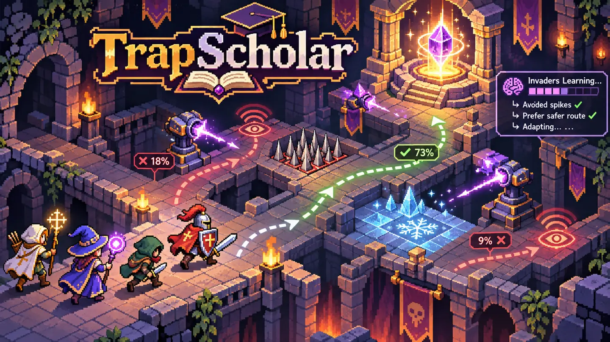

Invaders learn which corridors are deadly. They adapt. You adapt back. Defend the relic for 15 waves.

ORIGINAL KEY ART • GAMEPLAY BELOW
WAVE01 / 15Until victory
SOULS18Spend between raids
RELIC WARD♥ 12 / 16Breaches drain wards
HEROES STOPPED0Versus 0 breaches
THE SHADOW VAULT
Build their nightmare
BUILD PHASE
GATE ◆ WEST3 ROUTES · ONE RELICEAST ✧ VAULT
The dungeon is quiet. Prepare the first defense.
DEFENSE INVENTORYSELECT A TRAP, THEN CLICK A CORRIDOR
Keyboard-only trap placement
DUNGEON UPGRADESPERMANENT UNTIL RESET
BATTLE REPORT
The dungeon remembers
0 EVENTS
LIVE OBSERVATIONS • NOT FABRICATED
Learning over time
NO DATA
After each completed wave, the plot records heroes' actual next-route probabilities. Every point comes from the game simulation.
North Central South
Finish a wave to display your first data point.
THE UNDERGROUND LABORATORY
Research mode · zero GPU required
Compare an adapting policy with a uniform-route baseline on the same fixed trap layout. Both policies use the game's combat and learning engine; the experiment replenishes wards between trials to avoid early termination. These are seeded simulations, not LLM benchmarks.
DETERMINISTIC
Configure a seed and click RUN EXPERIMENT. The comparison is computed in-browser, then rendered here.
Reproducibility note: seed, game rules and trap layout are fixed. The laboratory replenishes wards between heroes (unlike the campaign) so both policies receive the same number of attempts. Different policies consume random numbers differently, so paired seeds are reproducible but are not matched random trajectories. Small sample results are demonstrations, not evidence of algorithmic superiority.